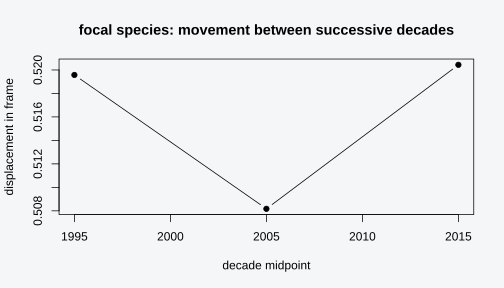
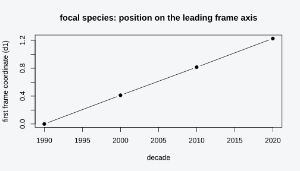
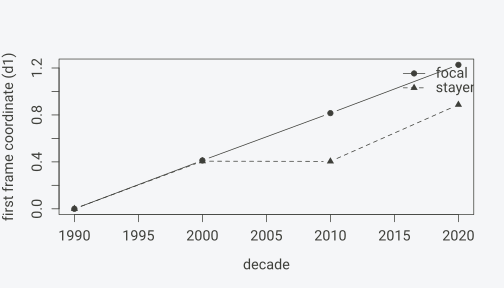
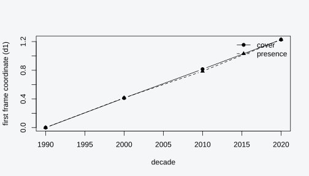
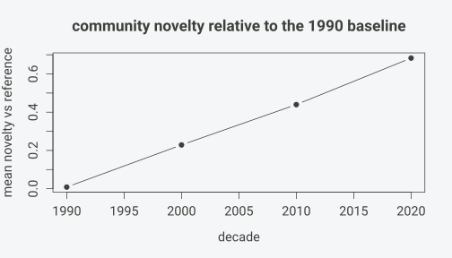
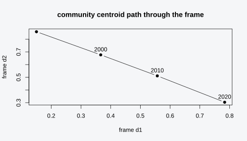

Tracking species and communities through time
Source:vignettes/specvec-temporal.Rmd
specvec-temporal.RmdInstallation
install.packages("pak")
pak::pak("gcol33/specvec")The core methods need only Matrix and
RSpectra. text2vec is required only for the
glove method, and FNN only to speed up
nearest-neighbour queries.
Vegetation data often arrives stamped with time: plots surveyed
across decades, a ReSurvey campaign returning to the same locations, a
chronosequence read off land-use history. The natural question is
whether a species or a community has moved through compositional space,
and where it went. SpecVec answers this with two front-door verbs,
species_trajectory() and
community_trajectory(), both built on one idea: fit a
single coordinate system once, then read every time window out in that
system.
The cross-time alignment problem
The obvious approach is to embed each decade on its own. Fit one
species embedding on the 1990s plots, another on the 2010s plots, and
compare the two coordinate matrices. The approach fails for a numerical
reason. An eigendecomposition or singular value decomposition returns
vectors that are unique only up to sign, and when eigenvalues are close,
up to rotation within the degenerate subspace. SpecVec fixes each
column’s sign deterministically (see
vignette("specvec-methods")), so refitting the
same data twice gives the same matrix. Two different
fits carry no such guarantee. The axes of the 1990s embedding and the
axes of the 2010s embedding are separate bases for separate matrices. A
species sitting at coordinate (1.2, -0.4) in one fit and
(1.2, -0.4) in the other has not necessarily stayed put;
the two coordinate pairs are written in different languages.
People patch this with Procrustes rotation: find the orthogonal transform that best maps one fit onto the other, apply it, then compare. That works when the two communities are mostly the same and only a few species moved. It breaks exactly when the data are interesting. Procrustes assumes a shared structure to align to, so if the species pool itself turned over between decades, the alignment absorbs the very signal being measured, and a real compositional shift gets rotated away. The rotation is also estimated from the data it then judges, which is circular.
The fixed-frame solution sidesteps all of this. One frame embedding is fitted once, on a stable reference set of species. Each time window is then projected into that frame without refitting: a focal species is placed, per window, at the cover-weighted centroid of the frame species it co-occurs with in that window. The frame never moves, so there is nothing to align. A point in 1990 and a point in 2010 are coordinates in the same basis, and their difference is a genuine displacement. There is no per-window rotation, no Procrustes step, and no circularity, because the thing measured (the focal species’ position) is never part of the thing that defines the axes (the frame).
The data that drives this needs a time column, supplied to
specvec() at build time. The simulation below codes four
decades. A focal species rides one species pool early and drifts toward
a second pool late, while a backbone of unrelated plots holds steady
throughout.
sim_time <- function(seed = 1) {
set.seed(seed)
a <- paste0("a", 1:8); b <- paste0("b", 1:8)
decs <- c(1990, 2000, 2010, 2020)
rows <- list(); pid <- 0L
for (di in seq_along(decs)) {
share <- (di - 1) / (length(decs) - 1)
for (i in 1:100) {
pid <- pid + 1L
pool <- if (runif(1) < share) b else a
sp <- c(sample(pool, sample(3:6, 1)), "focal")
rows[[pid]] <- data.frame(plot = paste0("p", pid), species = sp,
cover = round(runif(length(sp), 5, 90), 1),
decade = decs[di])
}
for (i in 1:50) {
pid <- pid + 1L
sp <- sample(a, sample(3:6, 1))
rows[[pid]] <- data.frame(plot = paste0("p", pid), species = sp,
cover = round(runif(length(sp), 5, 90), 1),
decade = decs[di])
}
}
do.call(rbind, rows)
}
x <- specvec(sim_time(), "plot", "species", abundance = "cover", time = "decade")
x
#> <specvec_data> plots=600 species=17
#> presence: nnz=3122 density=30.6078%
#> abundance: yes (cover_scale=percent) duplicates=max
#> time: 4 distinct value(s), range 1990-2020The focal species starts among the a pool
and is pulled toward the b pool as the decades pass. The
a-only backbone plots keep the a species
anchored, so they make a sensible frame.
A single window
A frame is itself just a species embedding. To see what one window
looks like in isolation, fit an embedding on a slice of the data with
the time argument. A numeric vector selects a closed
interval, so time = c(1990, 2000) trains on every plot
whose decade falls between 1990 and 2000.
emb_early <- species_embedding(x, time = c(1990, 2000), dim = 6, min_occurrence = 2)
emb_early
#> <specvec_embedding> method=abund_pmi dim=6 species=17
#> weighting=abundance_pmi factorization=eigen
#> kept 17/17 species (min_occurrence=2, min_cooccurrence=1) plots=300
#> time window: 1990-2000This is a valid embedding of the early decades. The trouble is the second one.
emb_late <- species_embedding(x, time = c(2010, 2020), dim = 6, min_occurrence = 2)
emb_late
#> <specvec_embedding> method=abund_pmi dim=6 species=17
#> weighting=abundance_pmi factorization=eigen
#> kept 17/17 species (min_occurrence=2, min_cooccurrence=1) plots=300
#> time window: 2010-2020emb_early and emb_late are two independent
fits. Each has its own sign-fixed axes, but those axes were chosen
against different co-occurrence operators, so the 6 dimensions of one do
not correspond to the 6 dimensions of the other. Comparing
emb_early$V to emb_late$V entry by entry
measures the difference between two coordinate systems as much as any
difference between two decades. This is the alignment problem in
miniature, and it is the reason species_trajectory()
exists: it fits the frame once and reuses it for every window, so the
comparison is clean by construction.
Quantifying the alignment problem
The argument above is easy to state and easy to underweight. It helps to put a number on it. We take the species shared between the two independent window fits, read off the displacement each species appears to make from the early fit to the late fit, and then compare that naive displacement against the displacement the fixed frame reports for the same species. The two readings should disagree sharply, because the naive one mixes a genuine compositional shift with a change of basis that nobody asked for.
We start with the shared species. Both fits keep every species above the occurrence floor in their own window, so the overlap is the set of species present in both halves of the series.
Ve <- emb_early$V; Vl <- emb_late$V
shared <- intersect(rownames(Ve), rownames(Vl))
shared <- setdiff(shared, "focal")
length(shared)
#> [1] 16The naive displacement is the row-wise Euclidean distance between the early and late coordinate matrices, restricted to those shared species. If the two fits spoke the same language, a species that did not move would sit at distance zero and one that moved a little would sit at a small distance. They do not speak the same language, so the distances are large and roughly uniform across species that the simulation never perturbed.
naive <- sqrt(rowSums((Ve[shared, ] - Vl[shared, ])^2))
summary(naive)
#> Min. 1st Qu. Median Mean 3rd Qu. Max.
#> 1.298 1.363 1.634 1.637 1.921 1.958These numbers are not a measurement of movement. They are the gap between two arbitrary bases, the same gap that a Procrustes step would try to rotate away. The honest test is to grant the comparison its best chance and fit the optimal orthogonal rotation that maps the late fit onto the early fit, then measure what displacement survives. The rotation is the closed-form orthogonal Procrustes solution from the singular value decomposition of the cross-product.
E <- Ve[shared, ]; L <- Vl[shared, ]
sv <- svd(crossprod(L, E))
R <- sv$u %*% t(sv$v)
L_rot <- L %*% R
aligned <- sqrt(rowSums((E - L_rot)^2))
summary(aligned)
#> Min. 1st Qu. Median Mean 3rd Qu. Max.
#> 0.2649 0.3138 0.4363 0.4397 0.5611 0.6141Even after the best possible rotation a sizeable residual survives, and the rotation was fitted to the very species it then scores, which is the circularity the alignment cannot escape. There is no clean displacement to extract here.
The fixed frame reports something different. We fit one frame on all species, then read each shared species at its early and late window centroid in that one frame (a focal species never enters its own centroid), and take the same row-wise distance. Because the frame never moved, this distance is a displacement and nothing else.
frame_all <- species_embedding(x, dim = 6, min_occurrence = 2)
tr_shared <- species_trajectory(x, species = shared, frame_embedding = frame_all,
by = c(1985, 2005, 2025))
ds <- as.data.frame(tr_shared)
e <- ds[ds$center == 1995, ]; l <- ds[ds$center == 2015, ]
l <- l[match(e$species, l$species), ]
dd <- paste0("d", 1:6)
frame_disp <- sqrt(rowSums((as.matrix(e[, dd]) - as.matrix(l[, dd]))^2))
summary(frame_disp)
#> Min. 1st Qu. Median Mean 3rd Qu. Max.
#> 0.0007996 0.0067801 0.0428526 0.0475124 0.0857144 0.1153286The fixed-frame displacements are smaller and, more to the point, interpretable. The species the simulation held steady move little, and the spread reflects real differences in how their associates turned over. The naive median sits well above the fixed-frame median, and that gap is the alignment problem made numeric.
c(naive_median = median(naive),
frame_median = median(frame_disp),
ratio = median(naive) / median(frame_disp))
#> naive_median frame_median ratio
#> 1.63437286 0.04285256 38.13944076The ratio is the size of the artifact the fixed frame removes. The naive comparison spends most of its magnitude on the change of basis; the fixed-frame comparison spends all of it on the data. This is what we mean when we call the per-window-refit approach uninterpretable: the arithmetic is correct and the coordinates it runs on are arbitrary.
A reader might ask whether a better alignment, a full Procrustes rotation rather than the greedy axis match used above, would close the gap. It would shrink the residual, and on data where the two windows share almost all their species and structure it can shrink it a long way. The trouble is that the rotation is fitted to make the two coordinate matrices agree, so it absorbs whatever it can, including genuine movement, and the better it fits the more real signal it can quietly remove. On a series where the species pool turns over, which is the case worth studying, the alignment has the most license to overcorrect exactly where the most is happening. The fixed frame avoids the question by never asking it. Nothing is rotated, so nothing real can be rotated away, and the cost is only that the frame must be fitted on a set of species stable enough to anchor every window. The frame is a modelling decision made once and in the open. The per-window rotation is re-estimated silently at every comparison.
Species trajectories
species_trajectory() traces one or more focal species
through the fixed frame. The frame defaults to every species except the
focal ones, so the focal species move through a background they do not
help define. Each window places the focal species at the cover-weighted
centroid of the frame species it co-occurs with in that window, and a
focal species never contributes to its own position.
The exclusion is what makes the trajectory clean. If the focal species helped define the frame, its own position would be partly a function of itself, and a track that moved would be hard to separate from a track that re-weighted its own contribution to the axes. Holding the focal species out of the frame makes the centroid a direct readout: the focal species is wherever its current associates already sit. When those associates turn over, the focal species moves; when they hold, it stays. Nothing about the axes changes between windows, so the only thing that can change a coordinate is the composition the focal species keeps. That is the property that makes a difference between two window positions a measurement the data supports.
tr <- species_trajectory(x, species = "focal", by = NULL, dim = 6,
min_occurrence = 2)
tr
#> <specvec_trajectory> focal=1 windows=4 dim=6 weights=cover
#> frame: method=abund_pmi species=16
#> windows: 1990, 2000, 2010, 2020
#> support per cell: 100-100 plotsThe print shows the frame (here the 16 non-focal species, embedded
once), the four windows, and the per-cell support range. With
by = NULL, one window is cut per distinct decade. The tidy
form spreads the array into one row per focal-species-by-window cell,
carrying the window center, the support, and the dim
coordinate columns d1 through d6.
d <- as.data.frame(tr)
d
#> species window center support d1 d2 d3 d4 d5 d6
#> 1 focal 1990 1990 100 -1.826037e-16 9.438059e-01 0 0 0 0
#> 2 focal 2000 2000 100 4.121488e-01 6.274344e-01 0 0 0 0
#> 3 focal 2010 2010 100 8.151734e-01 3.179018e-01 0 0 0 0
#> 4 focal 2020 2020 100 1.227235e+00 2.818953e-16 0 0 0 0The support column is the number of window plots that
actually contain the focal species, and center is the
numeric window center used for ordering and plotting. The
windows table records the same window metadata directly,
with the plot count per window.
tr$windows
#> label center n_plots
#> 1 1990 1990 150
#> 2 2000 2000 150
#> 3 2010 2010 150
#> 4 2020 2020 150A cell is NA in the coordinate columns when the focal
species co-occurs with no frame species in that window, so its centroid
is undefined. That happens in sparse windows, and
as.data.frame(tr, na.rm = TRUE) drops those rows. Here the
focal species occurs in roughly 100 plots per decade, so every cell is
backed by ample co-occurrence and none are NA.
The displacement of the focal species between consecutive windows is
the Euclidean distance between successive rows of the coordinate matrix.
The frame is fixed, so this distance is a real measure of how far the
species’ associates moved, not an artifact of refitting. A displacement
near zero means the focal species kept the same company across the two
windows; a large displacement means its co-occurrents shifted toward a
different region of the frame. Because the distance is taken across all
dim coordinates at once, it captures movement along every
axis together, which matters when a turnover spreads across several
frame dimensions at the same time.
dcols <- grep("^d[0-9]+$", names(d))
co <- as.matrix(d[order(d$center), dcols])
step <- sqrt(rowSums((co[-1, ] - co[-nrow(co), , drop = FALSE])^2))
mids <- (d$center[order(d$center)][-1] + d$center[order(d$center)][-nrow(co)]) / 2
plot(mids, step, type = "b", pch = 19,
xlab = "decade midpoint", ylab = "displacement in frame",
main = "focal species: movement between successive decades")
The displacement is largest across the middle decades, where the
simulated pull from the a pool to the b pool
is steepest, and smaller at the ends. The first coordinate alone tells a
similar story: tracking d1 against the window center shows
the focal species sliding along the frame’s leading axis as its
co-occurrents turn over.
plot(d$center, d$d1, type = "b", pch = 19,
xlab = "decade", ylab = "first frame coordinate (d1)",
main = "focal species: position on the leading frame axis")
Both views read the same fixed frame, so a movement on the plot is a
movement in the data. The displacement plot and the d1
trace answer slightly different questions. The displacement plot asks
how fast the species is moving between consecutive windows, with no sign
and no direction, so it peaks where change is quickest. The
d1 trace asks where the species sits on the dominant axis
at each window, with a direction, so it shows the cumulative drift. A
monotone d1 trace with a single displacement peak in the
middle is the signature of a steady directional shift that runs fastest
halfway through, which is exactly the pull the simulation built in.
Tracing several species at once
species takes a vector, so one call traces several focal
species through the same frame. This is more than a convenience. When
every focal species reads the same fixed frame, their trajectories are
directly comparable to each other as well as across time, which a series
of separate single-species calls could not guarantee if each refitted
its own background. We add two more focal species to the simulation to
have something to trace alongside the original.
df0 <- sim_time()
extra <- do.call(rbind, lapply(split(df0, df0$plot), function(g) {
if (runif(1) < 0.4) rbind(g, transform(g[1, ], species = "rider", cover = 30))
else if (runif(1) < 0.4) rbind(g, transform(g[1, ], species = "stayer", cover = 30))
else g
}))
xm <- specvec(extra, "plot", "species", abundance = "cover", time = "decade")With three focal names the return array gains a leading dimension.
U is now a focal-by-window-by-dim array, three slabs deep,
one slab per focal species, each slab a window-by-dim matrix in the
shared frame. The support matrix gains a matching row per
focal species. The array layout keeps the three indices separate so that
any one of them can be held fixed and the others read out: fix a species
to get its full window-by-dim track, fix a window to compare where all
three species sit at one decade, or fix a dimension to watch every
species move along a single frame axis. The tidy data frame flattens the
first two indices into rows and keeps the dimensions as columns, which
is the shape most plotting and modelling code expects, while the raw
array stays available for the slicing a data frame makes awkward.
trm <- species_trajectory(xm, species = c("focal", "rider", "stayer"),
by = NULL, dim = 6, min_occurrence = 2)
dim(trm$U)
#> [1] 3 4 6The tidy form spreads that array into one row per
focal-species-by-window cell, so three species across four windows give
twelve rows, carrying the species column to tell them
apart.
dm <- as.data.frame(trm)
table(dm$species)
#>
#> focal rider stayer
#> 4 4 4
head(dm[, c("species", "window", "support", "d1")], 6)
#> species window support d1
#> 1 focal 1990 100 -1.826037e-16
#> 2 rider 1990 64 -1.820139e-16
#> 3 stayer 1990 41 -1.832683e-16
#> 4 focal 2000 100 4.121488e-01
#> 5 rider 2000 66 2.051743e-01
#> 6 stayer 2000 35 4.059728e-01Plotting the first frame coordinate for two of the focal species on
one pair of axes shows their tracks side by side in the same frame. The
species the simulation pulls toward the b pool should sweep
across the leading axis while a species spread evenly across plots
should sit nearly flat.
f <- dm[dm$species == "focal", ]; s <- dm[dm$species == "stayer", ]
rng <- range(c(f$d1, s$d1))
plot(f$center, f$d1, type = "b", pch = 19, ylim = rng,
xlab = "decade", ylab = "first frame coordinate (d1)")
lines(s$center, s$d1, type = "b", pch = 17, lty = 2)
legend("topright", c("focal", "stayer"), pch = c(19, 17), lty = c(1, 2), bty = "n")
The two traces read off one frame, so the vertical gap between them at any decade is a real difference in where the two species sit relative to the same background.
Choosing windows
The by argument controls how the time axis is split. The
default by = NULL makes one window per distinct time value,
which suits decade-coded data where the decades are the natural
units.
tr$windows
#> label center n_plots
#> 1 1990 1990 150
#> 2 2000 2000 150
#> 3 2010 2010 150
#> 4 2020 2020 150Four decades, four windows, each centered on its decade and holding
150 plots (100 carrying the focal species plus 50 backbone). Passing a
numeric break vector instead bins the time axis with cut(),
using closed lower bounds. The breaks c(1985, 2005, 2025)
cut two bins, an early bin spanning 1985 to 2005 and a late bin spanning
2005 to 2025.
tr2 <- species_trajectory(x, species = "focal", by = c(1985, 2005, 2025),
dim = 6, min_occurrence = 2)
tr2$windows
#> label center n_plots
#> 1 [1.98e+03,2e+03] 1995 300
#> 2 (2e+03,2.02e+03] 2015 300The window centers are now the midpoints of the break intervals, 1995
and 2015, and each window pools two decades, so n_plots is
300 rather than 150. Coarser windows hold more plots per window, which
steadies the centroid in each cell while lowering temporal resolution.
Both readings describe the same trajectory at two grains, and the break
vector sets the grain.
Reusing one frame across analyses
Both verbs fit a frame embedding internally, and both accept a
pre-fitted one through frame_embedding =. Passing the same
frame to a species trajectory and a community trajectory puts the two
readings in one coordinate system, so a species’ track and the community
novelty around it are written in the same basis and can be overlaid
without any further alignment. We fit the frame once with
species_embedding(), on a stable backbone, and hand it to
both verbs.
frame <- species_embedding(x, dim = 6, min_occurrence = 2)
frame
#> <specvec_embedding> method=abund_pmi dim=6 species=17
#> weighting=abundance_pmi factorization=eigen
#> kept 17/17 species (min_occurrence=2, min_cooccurrence=1) plots=600The species trajectory now reuses this frame instead of fitting its own. The focal species rides through the supplied coordinate system, and the result is byte-comparable to anything else that reads the same frame.
tr_f <- species_trajectory(x, species = "focal", frame_embedding = frame,
by = NULL)
identical(tr_f$frame$V, frame$V)
#> [1] TRUEThe community trajectory takes the same frame, so its per-window communities and its novelty live in the basis the species track already used.
ct_f <- community_trajectory(x, frame_embedding = frame, by = NULL, k = 5)
identical(ct_f$frame$V, frame$V)
#> [1] TRUEThe shared frame is what lets integration_trajectory()
read a neophyte’s distance to a native community over time as a single
comparable number. The neophyte’s position and the community’s position
both come out of one fixed frame, so their separation is a distance in
that frame and not a mismatch between two bases.
There is a subtler use. A species can be projected into a frame that does not contain it, because the projection only reads the frame species the focal co-occurs with. We fit a frame on every species except the focal, drop the focal from it explicitly so the frame genuinely never saw it, and place the focal into that frame anyway.
others <- setdiff(x$species, "focal")
frame_no_focal <- species_embedding(x, dim = 6, min_occurrence = 2)
keep <- rownames(frame_no_focal$V) %in% others
frame_no_focal$V <- frame_no_focal$V[keep, , drop = FALSE]
frame_no_focal$species <- rownames(frame_no_focal$V)
"focal" %in% frame_no_focal$species
#> [1] FALSE
tr_out <- species_trajectory(x, species = "focal",
frame_embedding = frame_no_focal, by = NULL)
sum(is.na(tr_out$U))
#> [1] 0The frame contains no focal row, yet no cells are
NA: the focal species placed cleanly in every window, read
entirely against the frame species it co-occurs with. This is the
out-of-frame projection idea, and it is the same mechanism a new or
held-out species uses to enter an already-fitted coordinate system. The
frame holds the coordinates fixed; a fresh focal species is read against
it without disturbing it, the way a held-out point is scored against a
model that was fitted without it. The one requirement is that the focal
species co-occur with at least one frame species in a window, since with
no co-occurrence there is no centroid to compute and that window’s cell
falls back to NA.
Presence and cover weighting in trajectories
The weights argument changes what a co-occurrence is
worth when the centroid is formed. With weights = "cover",
the default when cover is present, each co-occurrence is weighted by the
geometric mean of the two covers, matching the AbundPMI operator the
frame itself uses, so an abundant associate pulls the centroid harder
than a sparse one. With weights = "presence", every
co-occurring plot counts the same regardless of how much of either
species was present. The two readings differ whenever abundance carries
signal, which is the common case in vegetation data.
tr_cov <- species_trajectory(x, species = "focal", weights = "cover",
by = NULL, dim = 6, min_occurrence = 2)
tr_pre <- species_trajectory(x, species = "focal", weights = "presence",
by = NULL, dim = 6, min_occurrence = 2)Reading the first frame coordinate under each weighting on one pair of axes shows the tracks part company. They agree on the broad direction, because the underlying turnover is the same, and they disagree on the detail, because cover re-weights which associates dominate the centroid in each window.
dc <- as.data.frame(tr_cov); dp <- as.data.frame(tr_pre)
rng <- range(c(dc$d1, dp$d1))
plot(dc$center, dc$d1, type = "b", pch = 19, ylim = rng,
xlab = "decade", ylab = "first frame coordinate (d1)")
lines(dp$center, dp$d1, type = "b", pch = 17, lty = 2)
legend("topright", c("cover", "presence"), pch = c(19, 17), lty = c(1, 2), bty = "n")
Cover is the sharper instrument when the abundance values mean something, since it lets a dominant associate steer the centroid the way it steers the community. Presence is the safer instrument when covers are ordinal guesses, patchily recorded, or absent, since it asks only the question the data can answer, which species were there together. The choice is a statement about how far the abundance numbers can be trusted, and it rewards a deliberate decision over the default.
Community trajectories and novelty over time
species_trajectory() follows individual species.
community_trajectory() follows the plots themselves and
asks how novel each window’s communities are relative to a reference.
The species frame is fitted once on all plots, every window’s plots are
pooled into that shared frame, and novelty is the per-plot mean distance
to the k nearest reference communities.
ct <- community_trajectory(x, dim = 6, min_occurrence = 2, k = 5)
ct
#> <specvec_community_trajectory> windows=4 dim=6 weights=cover
#> frame: method=abund_pmi species=17
#> reference window: 1990
#> window n_plots mean_novelty
#> 1990 150 0.0087
#> 2000 150 0.2289
#> 2010 150 0.4397
#> 2020 150 0.6829The print lists the reference window (the first, 1990, by default)
and the mean novelty per window. The novelty table holds
the full summary: window label, center, plot count, and the mean and
median per-plot novelty against the reference.
ct$novelty
#> window center n_plots mean_novelty median_novelty
#> 1 1990 1990 150 0.008678895 0.005097819
#> 2 2000 2000 150 0.228945327 0.007046297
#> 3 2010 2010 150 0.439703349 0.009224484
#> 4 2020 2020 150 0.682876330 0.986544895Mean novelty climbs across the decades, because each later window’s
communities have drifted further from the 1990 baseline as the
focal-carrying plots take on more of the b
pool. The reference window sits at novelty zero up to the nearest-
neighbour averaging, since it is being compared to itself. The median
sits beside the mean in the table for a reason: novelty is a per-plot
quantity, and a window can carry a few highly novel plots against a
stable majority. When the mean runs well above the median, a minority of
plots is doing the drifting; when the two track each other, the whole
window has shifted together. Reading both keeps a single unusual plot
from being mistaken for a community-wide change. The choice of
k sets how forgiving the novelty measure is: a small
k flags a plot as novel the moment it sits far from its
very nearest reference neighbours, while a larger k
averages over more of the reference cloud and asks the plot to be far
from a broader baseline before it scores high.
nv <- ct$novelty
plot(nv$center, nv$mean_novelty, type = "b", pch = 19,
xlab = "decade", ylab = "mean novelty vs reference",
main = "community novelty relative to the 1990 baseline")
The reference is a choice, not a fixed point. Passing
reference = a later window label or index re-bases the
novelty against that window instead of the first. Setting the reference
to the final decade measures how far each window sits from the
end state, which inverts the trend: early communities are now
the novel ones.
ct_end <- community_trajectory(x, dim = 6, min_occurrence = 2, k = 5,
reference = "2020")
ct_end$novelty
#> window center n_plots mean_novelty median_novelty
#> 1 1990 1990 150 0.11601077 0.107981094
#> 2 2000 2000 150 0.08577979 0.006068735
#> 3 2010 2010 150 0.04032158 0.004942524
#> 4 2020 2020 150 0.01144473 0.002566378The reference can also be supplied as an index
(reference = 4 picks the fourth window) or as an external
specvec_community or matrix, which lets a window be scored
against a baseline that lives outside the time series entirely, such as
a reference community assembled from undisturbed sites.
ct_idx <- community_trajectory(x, dim = 6, min_occurrence = 2, k = 5,
reference = 4)
identical(ct_idx$reference, "2020")
#> [1] TRUEThe communities field holds the per-window plot-by-dim
matrices in the shared frame, so the embeddings are available for
similarity work, clustering, or plotting beyond the novelty summary. It
is a list with one matrix per window, keyed by window label, each row a
plot and each column a frame dimension.
lengths(lapply(ct$communities, nrow))
#> 1990 2000 2010 2020
#> 1 1 1 1
dim(ct$communities[["1990"]])
#> [1] 150 6Because every matrix sits in the one frame, the window centroids are comparable directly. Stacking the per-window mean position and tracking it across decades gives a community-level analogue of the species track: the average plot moving through the frame as its composition drifts. We read the first two frame coordinates of each window centroid and trace them in order.
cen <- t(sapply(ct$communities, colMeans))
plot(cen[, 1], cen[, 2], type = "b", pch = 19,
xlab = "frame d1", ylab = "frame d2",
main = "community centroid path through the frame")
text(cen[, 1], cen[, 2], rownames(cen), pos = 3)
The centroid walks across the frame in decade order, the community-scale version of the same turnover the focal species traced one species at a time.
Practical guidance
A few rules of thumb keep trajectories honest.
Read the support before trusting a cell. A focal
species placed from two co-occurring plots gives a noisier centroid than
one placed from eighty. The $support matrix on a species
trajectory and the $n_plots column on both
$windows and $novelty report exactly how much
data backs each cell. As a working rule, treat a cell with support below
5 plots as indicative only and a cell with support below 3 as
unreliable, the same floor the default min_occurrence = 5
applies to the frame itself. The support matrix is small enough to scan
directly before any conclusion is drawn from a track.
A track that looks dramatic only in a window where support has
collapsed is a track to distrust. The cheapest defense is to print
min(tr$support) alongside any displacement and refuse to
read movement out of a cell the data cannot back.
Match window width to the question. Narrow windows
resolve fine temporal structure but spread the plots thin, raising the
chance of NA cells and unstable centroids. Wide windows
pool more plots per cell and steady the estimate at the cost of temporal
resolution. The by break vector is the dial; widening it is
the first move when cells go sparse.
Choose presence or cover deliberately. With
weights = "cover" (the default when cover is present)
co-occurrence is weighted by the geometric mean of covers, matching
AbundPMI, so abundant associates pull the centroid harder. With
weights = "presence" every co-occurring plot counts the
same. Cover is the sharper signal when the abundance is meaningful;
presence is the safer choice when covers are ordinal guesses or
missing.
Pick a reference window that means something. Community novelty is always relative to its reference. The first window is a sensible default for “how far have we come”, a final or undisturbed window suits “how far are we from a target”, and an external baseline lets a whole time series be scored against ground that sits outside it.
Reuse the frame across analyses. Both verbs accept
frame_embedding = a pre-fitted
specvec_embedding. Fitting one frame and passing it to both
species_trajectory() and
community_trajectory() puts the species tracks and the
community novelty in the same coordinate system, so the two readings
line up exactly.
When trajectories stop being reliable. Two failure
modes deserve a name. The first is the empty cell: a focal species with
no co-occurrence in a window has no centroid, and the coordinate columns
come back NA. This is honest behaviour, the function
declining to invent a position, and
as.data.frame(tr, na.rm = TRUE) drops those rows so the gap
does not leak into a plot. The second is the swinging cell: a window
holding only a handful of plots gives a centroid that lurches on
individual records, because one unusual plot is a large fraction of the
pool. A track that is steady through well-populated windows and erratic
through a thin one is reporting the thinness of that window. The remedy
for both is the same, widen the window with the by break
vector until each cell clears the support floor, and accept the loss of
temporal resolution that buys. A frame fitted on too few species fails
earlier and louder, since the default min_occurrence will
drop most species and the frame will refuse to fit below two; that error
is a signal to pool windows or lower the floor on purpose.
integration_trajectory() is the applied specialization
of this machinery for alien-integration questions: it places a neophyte
with species_trajectory(), places the native community per
window in the same frame, and reads the distance between them over time.
The mechanics here are general; the alien case is worked end to end,
with ReSurvey anchoring and an EVA example, in
vignette("specvec-integration").